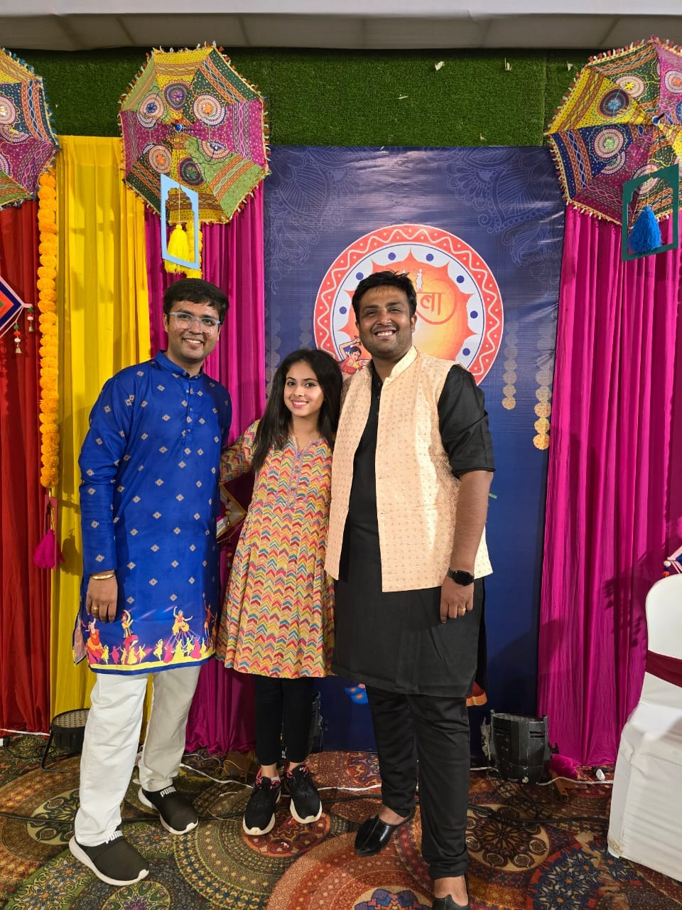
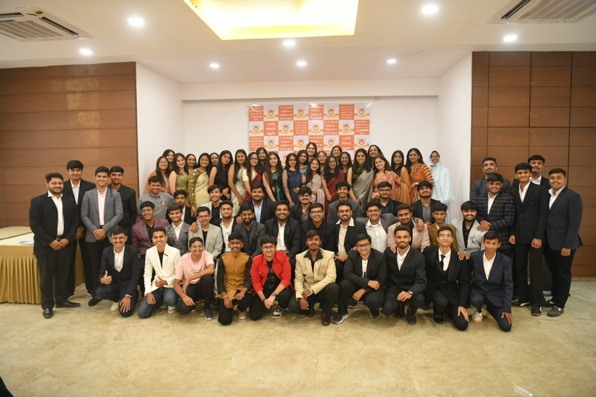
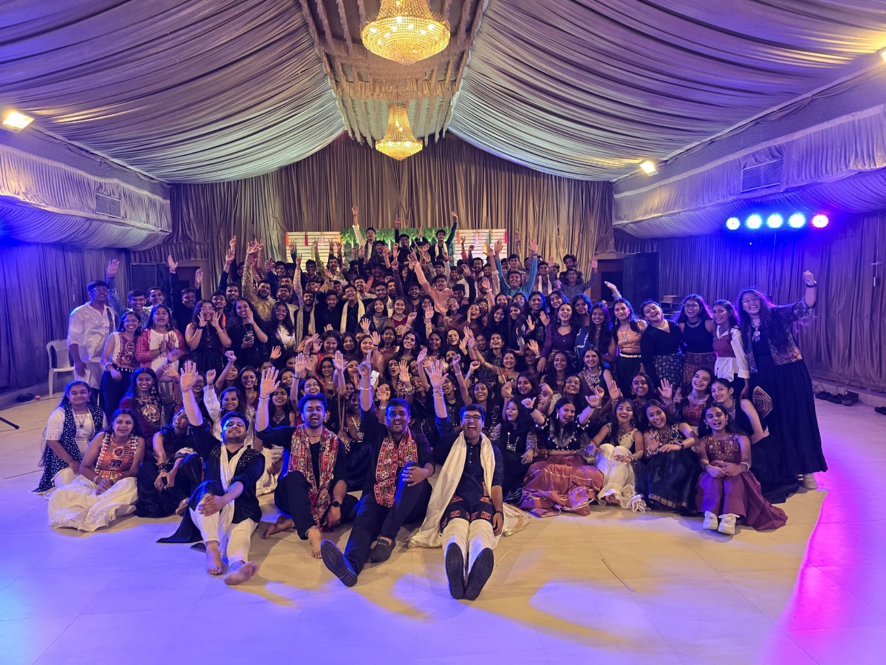

A LITTLE TRIBUTE FROM THE HEART
To the teachers who didn't just teach chapters, but taught me how to believe in myself.
Meet My Mentors ↓MORE THAN JUST TEACHERS
My journey through Class 12 wasn't just about books, marks and examinations. It was about having the right people beside me at the right time.
And for me, those people were Venil Sir and Jekil Sir.
THE TWO PEOPLE BEHIND THE JOURNEY
01 / THE PERFECT PERSON
Chartered Accountant • Mentor • Educator
The perfect person who somehow makes learning feel easier than it ever seemed before.
You have this incredible ability to take something complicated and turn it into something that simply makes sense.
“The best teachers don't make you feel like you're learning. They make you feel like you're discovering.”
✦ You made learning easier, and the journey better.
02 / THE PERFECT MOTIVATOR
Chartered Accountant • Mentor • Motivator
Some people have a presence that cannot really be explained. You simply feel it.
Your motivation, your words and that completely different kind of aura have pushed me to keep going even when things became difficult.
“A great teacher sees the potential in you before you learn to see it yourself.”
✦ You didn't just motivate me. You made me believe I could do it.
A LITTLE SOMETHING I WANT TO SAY
My Class 12 journey would not have been the same without your guidance, patience, motivation and constant support.
Whatever percentage I achieved carries a little piece of both of you in it.
WORDS THAT STAY
“A teacher plants the seeds of knowledge that continue to grow long after the classroom.”
“The greatest teachers leave footprints not on notebooks, but on hearts and futures.”
“Good teachers explain. Great teachers inspire.”
A FEW FRAMES
Every photograph holds a small piece of a much bigger journey.



A LITTLE NOTE
I know this wish is a little late. I was actually making this website for you both, and it took me a little longer than I expected.
But maybe a late wish is better than a wish that doesn't carry the effort behind it.
So, from the bottom of my heart — Happy Teachers' Day, Venil Sir & Jekil Sir.
Thank you for everything you've taught me, for every explanation, every motivation, every correction and every little push that helped me move forward.
This website is just a small way of saying a very big THANK YOU.
A GREETING TO
To an academy that is more than a classroom — a place where knowledge meets guidance, motivation meets ambition, and students become better versions of themselves.
Here's to the people behind the learning, the guidance and the success.